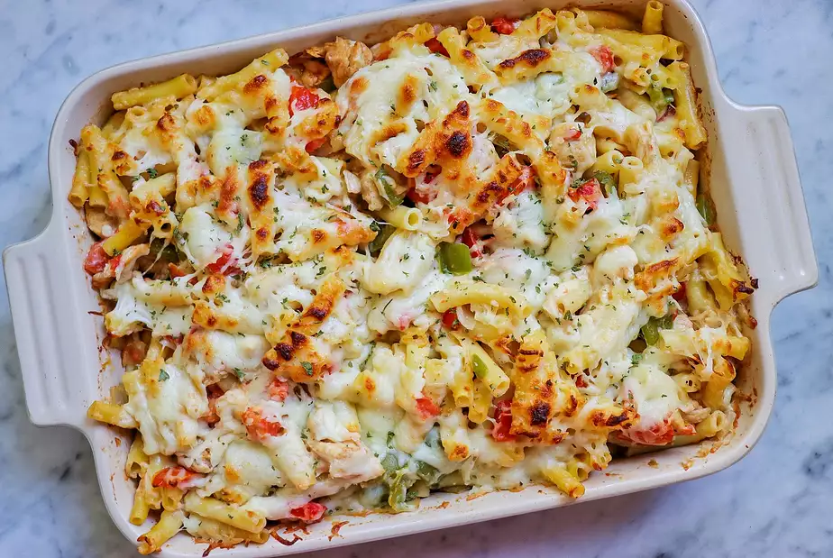

Home
Apple Butter

Description:
This is the Baked Ziti Alfredo Recipe
Ingredients:
- 1 (16 ounce) package ziti pasta
- 2 tablespoons olive oil
- 4 (5 ounce) skinless, boneless chicken breasts, cut into bite-sized pieces
- 2 tablespoons Cajun seasoning, or to taste
- 1/2 teaspoon salt
- 1 large green bell pepper, cut into bite-sized pieces
- 1 large red bell pepper, cut into bite-sized pieces
- 1 large onion, chopped
- 4 cloves garlic, minced, divided
- 6 medium Roma tomatoes, diced
- 2 tablespoons butter
- 1 tablespoon all-purpose flour, or more as needed
- 1 1/2 cups whole milk, or more to taste
- 1/2 cup grated Parmesan cheese, or more to taste
- salt and ground black pepper to taste
- 1 1/2 cups shredded mozzarella cheese
Steps:
- Preheat the oven to 400 degrees F (200 degrees C).
- Bring a large pot of lightly salted water to a boil. Add ziti and cook, stirring occasionally, until tender yet firm to the bite, about 10 minutes. Drain.
- While the pasta is cooking, heat oil in a large skillet over medium to medium-high heat. Add chicken, Cajun seasoning, and salt. Saute until chicken is cooked through and beginning to caramelize, about 10 minutes. Add bell peppers, onion, and 1/2 of the garlic; cook until tender, 5 to 7 minutes. Add tomatoes and bring to a simmer.
- Meanwhile, melt butter in a saucepan over medium heat. Add remaining garlic and saute until fragrant, about 1 minute. Add flour; cook and stir for 1 minute. Slowly whisk in 1 1/2 cups milk and bring to a gentle boil. Stir in 1/2 cup Parmesan cheese, salt, and pepper. Add more Parmesan to thicken or more milk to thin to your liking.
- Add cooked pasta to the chicken mixture; toss to coat. Transfer to a deep casserole dish. Pour cheese sauce over the pasta mixture and top with mozzarella cheese.
- Bake in the preheated oven until the top is golden and bubbly, about 15 minutes.
View the original website